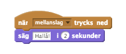

Checklista
För att få ditt monster att tala, kan du använda blocket
Säg
För att göra det lite mer imponerande, kan du göra så att monstrets mun öppnas och stängs medan den pratar. För att göra detta, redigera spriten som innehåller munnen - skapa en ny
klädselsom har en stängd mun(om den tidigare är öppen). Genom att byta mellan de två kan du animera att munnen öppnas och stängs.För att aktivera dem, se till att blocket med
sägsänder ett event som det andra blocket kan reagera på.För att göra detta lite mer flexibelt, använd en variabel för att kontrollera
talTidenmonstret säger något, använd den även för att kontrollera hur många gånger animationen reptererar.![när [mellanslag] trycks ned
sätt [talTiden] till (2)
skicka [talar]
säg [Hallå!] i (talTiden) sekunder
när [a] trycks ned
sätt [talTiden] till (4)
skicka [talar]
säg [Någonting lite längre.] i (talTiden) sekunder
när jag tar emot [talar]
repetera ((talTiden) * (4))
vänta (0.1) sekunder
byt till kostym [mun stängd]
vänta (0.1) sekunder
byt till kostym [mun öppen]
sluta](72247feb22551835387cdb221a4b62b0536470b4.png)
(Notera hur vi multiplicerar talTiden med 4 för att säkerställa att loopen repeterar tillräckligt många gånger?)
Du kan även se till att ditt monster talar genom att avända ljud i något av ljudblocken. Se bara till att importera ljuden först i Ljudfliken.
Varför inte prova att lägga till ljud till andra event? Du skulle kunna använda ett läskigt svävande ljud för ett spöke som driver runt på skärmen!
Om du har en mikrofon på din dator kan du även spela in dina egna ljud, överraska dina klubbkamrater genom att spela in ett högt MONSTERVRRRÅÅÅÅÅÅÅL!!!